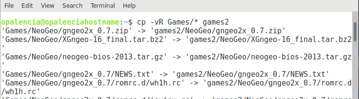

Copiar carpetas y archivos > cp¶
Nombre del comando: cp
Man page online: https://linux.die.net/man/1/cp
Descripción: Copiar carpetas y archivos de un lugar a otro.
Man page local: $ man cp o $ man cp > cp.txt
Instalado por defecto: Sí, al menos en Debian.
Algunas Opciones:
-R, -r, --recursive Copiar directorios recursivamente.
-v, --verbose Explique qué se está haciendo.
-u, --update Copiar solo cuando el archivo SOURCE es más nuevo que el archivo de destino o cuando falta el archivo de destino. En palabras simples solo copia si existe carpetas y archivos nuevos.
Ejemplo 1: $ cp -vR Games/* games2, en este ejemplo se copiará todos los archivos y carpetas contenidas en Games a games2, no así la propia carpeta Games; esto es posible al agregar /* al final de la carpeta a copiar.
Ejemplo 2: $ cp -vRu Games/* games2, hace lo mismo que el ejemplo 1, con la diferencia que solo copia si hay algo nuevo, de lo contrario no hace nada.